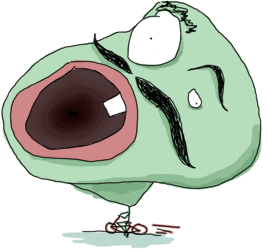
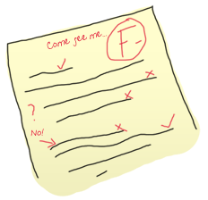
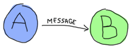

错误和异常
不要那么着急！
没有什么好的地方可以放置这章这种内容。 到目前为止，你已经经历了很多执行异常的场景，但是你还不知道该怎么去处理它们。 事实上，在这个章节内，我们不会看到所有的异常处理的技术。 这是因为Erlang存在两种主要的范式：函数和并发。 关于的函数部分，我们从这本书的开头就已经在介绍了： 透明参考，递归，高阶函数等。 关于并发的部分，也是Erlang非常的出名的部分：Actor，成百上千的进程，监控树等。
因为我认为应当在学习并发部分之前，先了解函数部分，所以在这章中，我们只包括函数部分的异常处理。 如果我们想非常好的处理异常，我们必须理解它们。
注意： 尽管，Erlang在函数编程方便拥有一些异常处理的机制， 但是绝大部分时间，Erlang的想法是让我们就让它崩溃吧。 我以前曾经提到过这一点，请看介绍这一章。 在Erlang的并发特性上，这种机制更为明显。
编译期间的错误
Erlang中有非常多种类的错误：编译错误，逻辑错误，运行时错误和普通错误。 现在我将重点介绍编译错误，在后面的章节中将介绍其它类型的错误。
编译期间的错误，经常是语法性质的错误： 编译器会检查你的函数名，语法符号（大括号，小括号，句号，逗号）, 包括函数的参数量等。 下面是一些常见的编译期间错误和可能解决方法：
- module.beam: Module name 'madule' does not match file name 'module'
- The module name you've entered in the
-moduleattribute doesn't match the filename. - ./module.erl:2: Warning: function some_function/0 is unused
- You have not exported a function, or the place where it's used has the wrong name or arity. It's also possible that you've written a function that is no longer needed. Check your code!
- ./module.erl:2: function some_function/1 undefined
- The function does not exist. You've written the wrong name or arity either in the
-exportattribute or when declaring the function. This error is also output when the given function could not be compiled, usually because of a syntax error like forgetting to end a function with a period. - ./module.erl:5: syntax error before: 'SomeCharacterOrWord'
- This happens for a variety of reason, namely unclosed parentheses, tuples or wrong expression termination (like closing the last branch of a
casewith a comma). Other reasons might include the use of a reserved atom in your code or unicode characters getting weirdly converted between different encodings (I've seen it happen!) - ./module.erl:5: syntax error before:
- All right, that one is certainly not as descriptive! This usually comes up when your line termination is not correct. This is a specific case of the previous error, so just keep an eye out.
- ./module.erl:5: Warning: this expression will fail with a 'badarith' exception
- Erlang is all about dynamic typing, but remember that the types are strong. In this case, the compiler is smart enough to find that one of your arithmetic expressions will fail (say,
llama + 5). It won't find type errors much more complex than that, though. - ./module.erl:5: Warning: variable 'Var' is unused
- You declared a variable and never use it afterwards. This might be a bug with your code, so double-check what you have written. Otherwise, you might want to switch the variable name to
_or just prefix it with an underscore (something like _Var) if you feel the name helps make the code readable. - ./module.erl:5: Warning: a term is constructed, but never used
- In one of your functions, you're doing something such as building a list, declaring a tuple or an anonymous function without ever binding it to a variable or returning it. This warning tells you you're doing something useless or that you have made some mistake.
- ./module.erl:5: head mismatch
- It's possible your function has more than one head, and each of them has a different arity. Don't forget that different arity means different functions, and you can't interleave function declarations that way. This error is also raised when you insert a function definition between the head clauses of another function.
- ./module.erl:5: Warning: this clause cannot match because a previous clause at line 4 always matches
- A function defined in the module has a specific clause defined after a catch-all one. As such, the compiler can warn you that you'll never even need to go to the other branch.
- ./module.erl:9: variable 'A' unsafe in 'case' (line 5)
- You're using a variable declared within one of the branches of a
case ... ofoutside of it. This is considered unsafe. If you want to use such variables, you'd be better of doingMyVar = case ... of...
这里应该包含了编译时期绝大部分的错误。有些时候，一些错误会产生大量的其它函数的错误信息， 因此非常难找到。因此有时候解决编译错误的方法是，不要被编译器爆出的错误所误导，因为很多时候编译器告诉你的错误根本就不是错误。 如果你看到其它种类错误，但是不在上面的列表中的时候，请给我发邮件，我会尽快的将它包含到这张错误列表中。
不，是你的逻辑出错了!
逻辑错误是非常难发现和调试的错误。 这类错误绝大部分都是出自程序员自己： 一般来讲，都是'if'或者'case'的选择分支中没有考虑全面，将应当使用除法的地方和使用乘法的地方混淆了，等等。 这类错误，不会让你的程序崩溃，只是会返回你没见过的坏数据或者让你的程序做出非你预想的结果。
很多时候你希望是自己发现这些问题， 不过Erlang有很多工具可以帮助自己发现这些问题，其中包括测试框架， TypEr和Dialyzer（将在章节类型中出现）， 还有一个好用的 调试器和 追踪单元等等。 测试你的代码也许是最好的防卫方式。不幸的是，在每个程序员的职业生涯中，所遇到的错误，足够写一打书了， 所以我避免在这上面花费很多时间。非常容易发现哪些让你程序崩溃的错误，因为它们就摆在你面前。 注意这是非常原始的“让它崩溃吧”的思路。
运行期错误
运行期错误在某种意义上会造成相当大的破坏，同样是会让你的代码崩溃。 当然Erlang拥有发现这些错误的方法，发现者这些错误是非常有价值的。 因此，我写了一些常见的运行期错误的代码，其中包涵了这些错误是如何产生的解释。
- function_clause
-
1> lists:sort([3,2,1]). [1,2,3] 2> lists:sort(fffffff). ** exception error: no function clause matching lists:sort(fffffff) - 当所有函数的哨位都失败了，或者没有任何一个函数模式匹配，我们就会看到这个错误。
- case_clause
-
3> case "Unexpected Value" of 3> expected_value -> ok; 3> other_expected_value -> 'also ok' 3> end. ** exception error: no case clause matching "Unexpected Value" - 这个看起来更像某人忘记
case中的一些特殊情况，或者发送了错误的数据， 或者需要一个捕获所有的分支！ - if_clause
-
4> if 2 > 4 -> ok; 4> 0 > 1 -> ok 4> end. ** exception error: no true branch found when evaluating an if expression - 这个和
case_clause错误很像： 因为它没有办法找到一个可以判定是true的分支。 所以你需要重新审视所有的分支或者添加一个默认的true分支，这样才能保证你的代码没问题。 - badmatch
-
5> [X,Y] = {4,5}. ** exception error: no match of right hand side value {4,5} -
错误匹配这个错误，是在任何发生匹配失败的时候就会产生的。
这个绝大部分情况都是，你尝试一个不可能的模式匹配（就像上面那样），活着尝试绑定变量两次，
或者像
=操作符两边不想等（这经常造成重新绑定变量失败！）。 请注意，出现这样的错误是因为，很多开发人员认为_MyVar和_具有相同的性质。 以下划线开头的变量是普通变量，除了当你不使用的时候，编译器不会向你抱怨说该变量没使用。它是不能被绑定多于一次的。 - badarg
-
6> erlang:binary_to_list("heh, already a list"). ** exception error: bad argument in function binary_to_list/1 called as binary_to_list("heh, already a list") -
这个和
function_clause错误非常像，因为都是用不正确的参数调用了函数。其中主要的不同是 这个错误经常是因为开发人员在函数哨位外的函数内进行参数的验证。我将在后面的章节中，告诉你怎么主动throw这个错误信息。 - undef
-
7> lists:random([1,2,3]). ** exception error: undefined function lists:random/1 -
这个错误主要是当调用一个函数时，该函数不存在。
情确保函数和函数的变量数量已经从模块中正确的导出（如果你是从模块外部调用）并且
再检查下你的模块和函数名拼写是否正确。
还有一种情况下，我们会看到这个错误，就是模块并不在Erlang的搜索路径下。
默认情况下，Erlang的搜索路径是当前文件夹。当然你可以通过
code:add_patha/1或code:add_pathz/1。 如果依然无法使用，请确保你已经编译了这个模块！ - badarith
-
8> 5 + llama. ** exception error: bad argument in an arithmetic expression in operator +/2 called as 5 + llama - 这个一般都是当你进行了错误的数学运算的时候，才会看到，像除以0或者将数字和原子混在了一起。
- badfun
-
9> hhfuns:add(one,two). ** exception error: bad function one in function hhfuns:add/2 -
这个错误经常发生的原因是你将变量当作函数，但是这个变量的值并不是一个函数。
就像例子中那样我使用了前一章
中的函数
hhfuns并且用两个原子当作函数。然后这是不会工作的，然后我们就看到了badfun错误。 - badarity
-
10> F = fun(_) -> ok end. #Fun<erl_eval.6.13229925> 11> F(a,b). ** exception error: interpreted function with arity 1 called with two arguments -
badarity是badfun错误的一个特殊情况： 当你使用高阶函数的时候，但是你传给它们过多的（或过少）的参数。 - system_limit
-
这里有很多原因会引起
system_limit这个错误： 太多的进程（我们已经看到过了），原子太长了，函数的参数量太多了， 原子的数量太多了，连接太多的节点等。如果想得到完整的详细信息列表， 请阅读Erlang Efficiency Guide 有关系统限制的章节。注意了，这里面有些错误是完全可以引起整个VM崩溃的。
Raising Exceptions

In trying to monitor the execution of code and protect against logical errors, it's often a good idea to provoke run-time crashes so problems will be spotted early.
There are three kinds of exceptions in Erlang: errors, throws and exits. They all have different uses (kind of):
Errors
Calling erlang:error(Reason) will end the execution in the current process and include a stack trace of the last functions called with their arguments when you catch it. These are the kind of exceptions that provoke the run-time errors above.
Errors are the means for a function to stop its execution when you can't expect the calling code to handle what just happened. If you get an if_clause error, what can you do? Change the code and recompile, that's what you can do (other than just displaying a pretty error message). An example of when not to use errors could be our tree module from the recursion chapter. That module might not always be able to find a specific key in a tree when doing a lookup. In this case, it makes sense to expect the user to deal with unknown results: they could use a default value, check to insert a new one, delete the tree, etc. This is when it's appropriate to return a tuple of the form {ok, Value} or an atom like undefined rather than raising errors.
Now, errors aren't limited to the examples above. You can define your own kind of errors too:
1> erlang:error(badarith). ** exception error: bad argument in an arithmetic expression 2> erlang:error(custom_error). ** exception error: custom_error
Here, custom_error is not recognized by the Erlang shell and it has no custom translation such as "bad argument in ...", but it's usable in the same way and can be handled by the programmer in an identical manner (we'll see how to do that soon).
Exits
There are two kinds of exits: 'internal' exits and 'external' exits. Internal exits are triggered by calling the function exit/1 and make the current process stop its execution. External exits are called with exit/2 and have to do with multiple processes in the concurrent aspect of Erlang; as such, we'll mainly focus on internal exits and will visit the external kind later on.
Internal exits are pretty similar to errors. In fact, historically speaking, they were the same and only exit/1 existed. They've got roughly the same use cases. So how to choose one? Well the choice is not obvious. To understand when to use one or the other, there's no choice but to start looking at the concepts of actors and processes from far away.
In the introduction, I've compared processes as people communicating by mail. There's not a lot to add to the analogy, so I'll go to diagrams and bubbles.
Processes here can send each other messages. A process can also listen for messages, wait for them. You can also choose what messages to listen to, discard some, ignore others, give up listening after a certain time etc.

These basic concepts let the implementors of Erlang use a special kind of message to communicate exceptions between processes. They act a bit like a process' last breath; they're sent right before a process dies and the code it contains stops executing. Other processes that were listening for that specific kind of message can then know about the event and do whatever they please with it. This includes logging, restarting the process that died, etc.

With this concept explained, the difference in using erlang:error/1 and exit/1 is easier to understand. While both can be used in an extremely similar manner, the real difference is in the intent. You can then decide whether what you've got is 'simply' an error or a condition worthy of killing the current process. This point is made stronger by the fact that erlang:error/1 returns a stack trace and exit/1 doesn't. If you were to have a pretty large stack trace or lots of arguments to the current function, copying the exit message to every listening process would mean copying the data. In some cases, this could become unpractical.
Throws
A throw is a class of exceptions used for cases that the programmer can be expected to handle. In comparison with exits and errors, they don't really carry any 'crash that process!' intent behind them, but rather control flow. As you use throws while expecting the programmer to handle them, it's usually a good idea to document their use within a module using them.
The syntax to throw an exception is:
1> throw(permission_denied). ** exception throw: permission_denied
Where you can replace permission_denied by anything you want (including 'everything is fine', but that is not helpful and you will lose friends).
Throws can also be used for non-local returns when in deep recursion. An example of that is the ssl module which uses throw/1 as a way to push {error, Reason} tuples back to a top-level function. This function then simply returns that tuple to the user. This lets the implementer only write for the successful cases and have one function deal with the exceptions on top of it all.
Another example could be the array module, where there is a lookup function that can return a user-supplied default value if it can't find the element needed. When the element can't be found, the value default is thrown as an exception, and the top-level function handles that and substitutes it with the user-supplied default value. This keeps the programmer of the module from needing to pass the default value as a parameter of every function of the lookup algorithm, again focusing only on the successful cases.

As a rule of thumb, try to limit the use of your throws for non-local returns to a single module in order to make it easier to debug your code. It will also let you change the innards of your module without requiring changes in its interface.
Dealing with Exceptions
I've already mentioned quite a few times that throws, errors and exits can be handled. The way to do this is by using a try ... catch expression.
A try ... catch is a way to evaluate an expression while letting you handle the successful case as well as the errors encountered. The general syntax for such an expression is:
try Expression of
SuccessfulPattern1 [Guards] ->
Expression1;
SuccessfulPattern2 [Guards] ->
Expression2
catch
TypeOfError:ExceptionPattern1 ->
Expression3;
TypeOfError:ExceptionPattern2 ->
Expression4
end.
The Expression in between try and of is said to be protected. This means that any kind of exception happening within that call will be caught. The patterns and expressions in between the try ... of and catch behave in exactly the same manner as a case ... of. Finally, the catch part: here, you can replace TypeOfError by either error, throw or exit, for each respective type we've seen in this chapter. If no type is provided, a throw is assumed. So let's put this in practice.
First of all, let's start a module named exceptions. We're going for simple here:
-module(exceptions).
-compile(export_all).
throws(F) ->
try F() of
_ -> ok
catch
Throw -> {throw, caught, Throw}
end.
We can compile it and try it with different kinds of exceptions:
1> c(exceptions).
{ok,exceptions}
2> exceptions:throws(fun() -> throw(thrown) end).
{throw,caught,thrown}
3> exceptions:throws(fun() -> erlang:error(pang) end).
** exception error: pang
As you can see, this try ... catch is only receiving throws. As stated earlier, this is because when no type is mentioned, a throw is assumed. Then we have functions with catch clauses of each type:
errors(F) ->
try F() of
_ -> ok
catch
error:Error -> {error, caught, Error}
end.
exits(F) ->
try F() of
_ -> ok
catch
exit:Exit -> {exit, caught, Exit}
end.
And to try them:
4> c(exceptions).
{ok,exceptions}
5> exceptions:errors(fun() -> erlang:error("Die!") end).
{error,caught,"Die!"}
6> exceptions:exits(fun() -> exit(goodbye) end).
{exit,caught,goodbye}
The next example on the menu shows how to combine all the types of exceptions in a single try ... catch. We'll first declare a function to generate all the exceptions we need:
sword(1) -> throw(slice);
sword(2) -> erlang:error(cut_arm);
sword(3) -> exit(cut_leg);
sword(4) -> throw(punch);
sword(5) -> exit(cross_bridge).
black_knight(Attack) when is_function(Attack, 0) ->
try Attack() of
_ -> "None shall pass."
catch
throw:slice -> "It is but a scratch.";
error:cut_arm -> "I've had worse.";
exit:cut_leg -> "Come on you pansy!";
_:_ -> "Just a flesh wound."
end.
Here is_function/2 is a BIF which makes sure the variable Attack is a function of arity 0. Then we add this one for good measure:
talk() -> "blah blah".
And now for something completely different:
7> c(exceptions).
{ok,exceptions}
8> exceptions:talk().
"blah blah"
9> exceptions:black_knight(fun exceptions:talk/0).
"None shall pass."
10> exceptions:black_knight(fun() -> exceptions:sword(1) end).
"It is but a scratch."
11> exceptions:black_knight(fun() -> exceptions:sword(2) end).
"I've had worse."
12> exceptions:black_knight(fun() -> exceptions:sword(3) end).
"Come on you pansy!"
13> exceptions:black_knight(fun() -> exceptions:sword(4) end).
"Just a flesh wound."
14> exceptions:black_knight(fun() -> exceptions:sword(5) end).
"Just a flesh wound."

The expression on line 9 demonstrates normal behavior for the black knight, when function execution happens normally. Each line that follows that one demonstrates pattern matching on exceptions according to their class (throw, error, exit) and the reason associated with them (slice, cut_arm, cut_leg).
One thing shown here on expressions 13 and 14 is a catch-all clause for exceptions. The _:_ pattern is what you need to use to make sure to catch any exception of any type. In practice, you should be careful when using the catch-all patterns: try to protect your code from what you can handle, but not any more than that. Erlang has other facilities in place to take care of the rest.
There's also an additional clause that can be added after a try ... catch that will always be executed. This is equivalent to the 'finally' block in many other languages:
try Expr of
Pattern -> Expr1
catch
Type:Exception -> Expr2
after % this always gets executed
Expr3
end
No matter if there are errors or not, the expressions inside the after part are guaranteed to run. However, you can not get any return value out of the after construct. Therefore, after is mostly used to run code with side effects. The canonical use of this is when you want to make sure a file you were reading gets closed whether exceptions are raised or not.
We now know how to handle the 3 classes of exceptions in Erlang with catch blocks. However, I've hidden information from you: it's actually possible to have more than one expression between the try and the of!
whoa() ->
try
talk(),
_Knight = "None shall Pass!",
_Doubles = [N*2 || N <- lists:seq(1,100)],
throw(up),
_WillReturnThis = tequila
of
tequila -> "hey this worked!"
catch
Exception:Reason -> {caught, Exception, Reason}
end.
By calling exceptions:whoa(), we'll get the obvious {caught, throw, up}, because of throw(up). So yeah, it's possible to have more than one expression between try and of...
What I just highlighted in exceptions:whoa/0 and that you might have not noticed is that when we use many expressions in that manner, we might not always care about what the return value is. The of part thus becomes a bit useless. Well good news, you can just give it up:
im_impressed() ->
try
talk(),
_Knight = "None shall Pass!",
_Doubles = [N*2 || N <- lists:seq(1,100)],
throw(up),
_WillReturnThis = tequila
catch
Exception:Reason -> {caught, Exception, Reason}
end.
And now it's a bit leaner!
Note: It is important to know that the protected part of an exception can't be tail recursive. The VM must always keep a reference there in case there's an exception popping up.
Because the try ... catch construct without the of part has nothing but a protected part, calling a recursive function from there might be dangerous for programs supposed to run for a long time (which is Erlang's niche). After enough iterations, you'll go out of memory or your program will get slower without really knowing why. By putting your recursive calls between the of and catch, you are not in a protected part and you will benefit from Last Call Optimisation.
Some people use try ... of ... catch rather than try ... catch by default to avoid unexpected errors of that kind, except for obviously non-recursive code with results that won't be used by anything. You're most likely able to make your own decision on what to do!
Wait, there's more!
As if it wasn't enough to be on par with most languages already, Erlang's got yet another error handling structure. That structure is defined as the keyword catch and basically captures all types of exceptions on top of the good results. It's a bit of a weird one because it displays a different representation of exceptions:
1> catch throw(whoa).
whoa
2> catch exit(die).
{'EXIT',die}
3> catch 1/0.
{'EXIT',{badarith,[{erlang,'/',[1,0]},
{erl_eval,do_apply,5},
{erl_eval,expr,5},
{shell,exprs,6},
{shell,eval_exprs,6},
{shell,eval_loop,3}]}}
4> catch 2+2.
4
What we can see from this is that throws remain the same, but that exits and errors are both represented as {'EXIT', Reason}. That's due to errors being bolted to the language after exits (they kept a similar representation for backwards compatibility).
The way to read this stack trace is as follows:
5> catch doesnt:exist(a,4).
{'EXIT',{undef,[{doesnt,exist,[a,4]},
{erl_eval,do_apply,5},
{erl_eval,expr,5},
{shell,exprs,6},
{shell,eval_exprs,6},
{shell,eval_loop,3}]}}
- The type of error is
undef, which means the function you called is not defined (see the list at the beginning of this chapter) - The list right after the type of error is a stack trace
- The tuple on top of the stack trace represents the last function to be called (
{Module, Function, Arguments}). That's your undefined function. - The tuples after that are the functions called before the error. This time they're of the form
{Module, Function, Arity}. - That's all there is to it, really.
You can also manually get a stack trace by calling erlang:get_stacktrace/0 in the process that crashed.
You'll often see catch written in the following manner (we're still in exceptions.erl):
catcher(X,Y) ->
case catch X/Y of
{'EXIT', {badarith,_}} -> "uh oh";
N -> N
end.
And as expected:
6> c(exceptions).
{ok,exceptions}
7> exceptions:catcher(3,3).
1.0
8> exceptions:catcher(6,3).
2.0
9> exceptions:catcher(6,0).
"uh oh"
This sounds compact and easy to catch exceptions, but there are a few problems with catch. The first of it is operator precedence:
10> X = catch 4+2. * 1: syntax error before: 'catch' 10> X = (catch 4+2). 6
That's not exactly intuitive given that most expressions do not need to be wrapped in parentheses this way. Another problem with catch is that you can't see the difference between what looks like the underlying representation of an exception and a real exception:
11> catch erlang:boat().
{'EXIT',{undef,[{erlang,boat,[]},
{erl_eval,do_apply,5},
{erl_eval,expr,5},
{shell,exprs,6},
{shell,eval_exprs,6},
{shell,eval_loop,3}]}}
12> catch exit({undef, [{erlang,boat,[]}, {erl_eval,do_apply,5}, {erl_eval,expr,5}, {shell,exprs,6}, {shell,eval_exprs,6}, {shell,eval_loop,3}]}).
{'EXIT',{undef,[{erlang,boat,[]},
{erl_eval,do_apply,5},
{erl_eval,expr,5},
{shell,exprs,6},
{shell,eval_exprs,6},
{shell,eval_loop,3}]}}
And you can't know the difference between an error and an actual exit. You could also have used throw/1 to generate the above exception. In fact, a throw/1 in a catch might also be problematic in another scenario:
one_or_two(1) -> return; one_or_two(2) -> throw(return).
And now the killer problem:
13> c(exceptions).
{ok,exceptions}
14> catch exceptions:one_or_two(1).
return
15> catch exceptions:one_or_two(2).
return
Because we're behind a catch, we can never know if the function threw an exception or if it returned an actual value! This might not really happen a whole lot in practice, but it's still a wart big enough to have warranted the addition of the try ... catch construct in the R10B release.
Try a try in a tree
To put exceptions in practice, we'll do a little exercise requiring us to dig for our tree module. We're going to add a function that lets us do a lookup in the tree to find out whether a value is already present in there or not. Because the tree is ordered by its keys and in this case we do not care about the keys, we'll need to traverse the whole thing until we find the value.
The traversal of the tree will be roughly similar to what we did in tree:lookup/2, except this time we will always search down both the left branch and the right branch. To write the function, you'll just need to remember that a tree node is either {node, {Key, Value, NodeLeft, NodeRight}} or {node, 'nil'} when empty. With this in hand, we can write a basic implementation without exceptions:
%% looks for a given value 'Val' in the tree.
has_value(_, {node, 'nil'}) ->
false;
has_value(Val, {node, {_, Val, _, _}}) ->
true;
has_value(Val, {node, {_, _, Left, Right}}) ->
case has_value(Val, Left) of
true -> true;
false -> has_value(Val, Right)
end.
The problem with this implementation is that every node of the tree we branch at has to test for the result of the previous branch:

This is a bit annoying. With the help of throws, we can make something that will require less comparisons:
has_value(Val, Tree) ->
try has_value1(Val, Tree) of
false -> false
catch
true -> true
end.
has_value1(_, {node, 'nil'}) ->
false;
has_value1(Val, {node, {_, Val, _, _}}) ->
throw(true);
has_value1(Val, {node, {_, _, Left, Right}}) ->
has_value1(Val, Left),
has_value1(Val, Right).
The execution of the code above is similar to the previous version, except that we never need to check for the return value: we don't care about it at all. In this version, only a throw means the value was found. When this happens, the tree evaluation stops and it falls back to the catch on top. Otherwise, the execution keeps going until the last false is returned and that's what the user sees:
Of course, the implementation above is longer than the previous one. However, it is possible to realize gains in speed and in clarity by using non-local returns with a throw, depending on the operations you're doing. The current example is a simple comparison and there's not much to see, but the practice still makes sense with more complex data structures and operations.
That being said, we're probably ready to solve real problems in sequential Erlang.